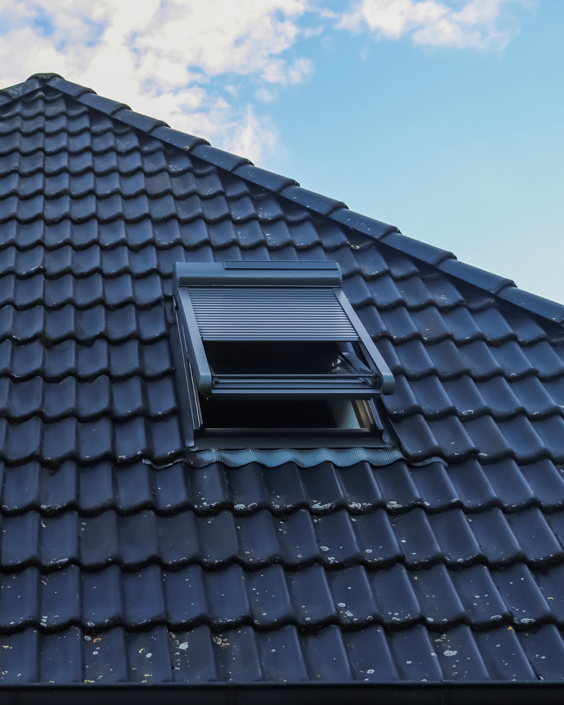
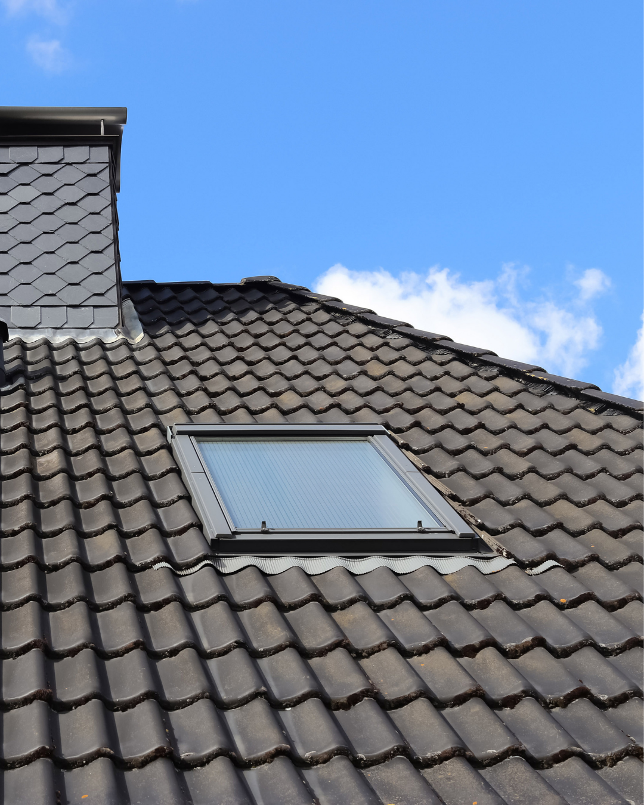
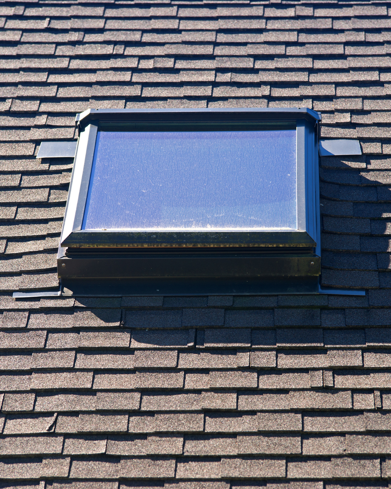
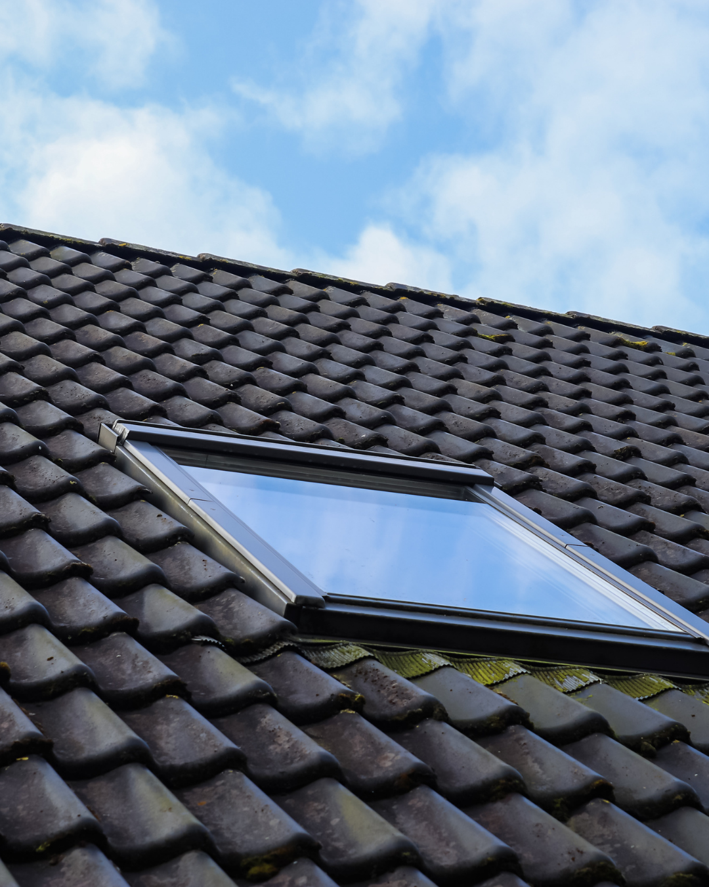
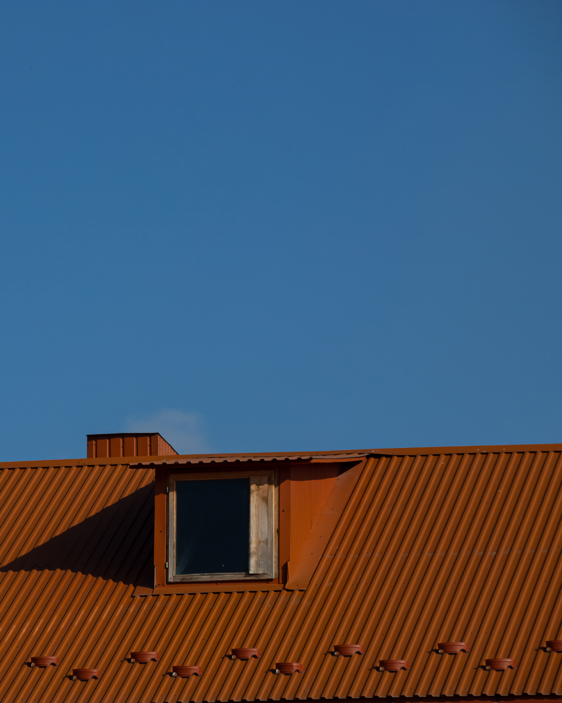
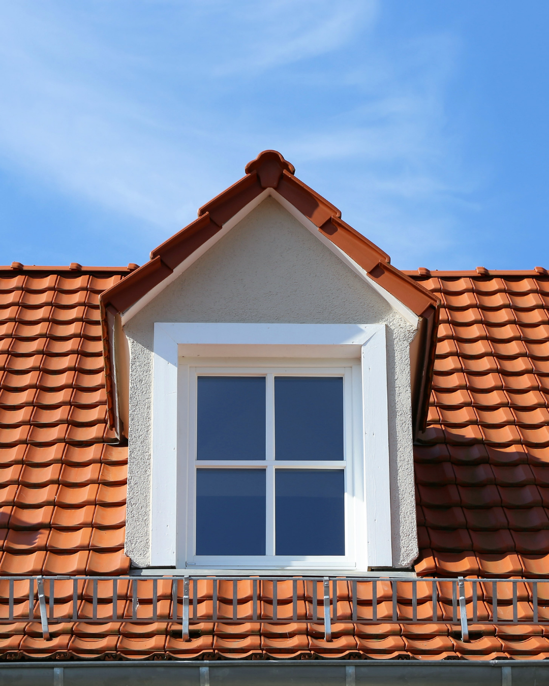

Fenêtres de toit à Montauban — Tarn-et-Garonne
Apportez lumière naturelle et ventilation à vos combles avec l'installation de Velux et fenêtres de toit. Étanchéité garantie, pose soignée par des artisans qualifiés.

Nos prestations Velux
Les fenêtres de toit transforment vos combles en espaces de vie lumineux et ventilés. Jeff Couverture vous accompagne de la conception à la pose, avec une étanchéité irréprochable.
Installation de fenêtres de toit Velux de toutes dimensions. Ouverture par rotation, projection ou motorisée. Nous adaptons la pose au type de couverture existant.
Remplacement de fenêtres de toit anciennes ou défaillantes. Mise aux normes, amélioration de l'isolation thermique et acoustique. Intervention rapide sans dégâts sur la couverture.
Installation de conduits de lumière naturelle pour les pièces sans accès direct au toit. Captez la lumière du soleil et diffusez-la dans vos espaces intérieurs.
Pose de raccords d'étanchéité spécifiques à chaque type de couverture (tuiles, ardoises, zinc). Nous garantissons une étanchéité parfaite autour de chaque fenêtre.
Réalisation de l'habillage intérieur en placo autour de la fenêtre de toit. Finitions soignées pour une intégration parfaite dans votre décoration intérieure.
Pose de volets roulants, stores occultants ou stores extérieurs pare-soleil pour vos fenêtres de toit. Solutions manuelles ou motorisées avec télécommande.

Pourquoi installer un Velux ?
L'installation d'une fenêtre de toit est l'un des investissements les plus rentables pour votre habitation. Elle transforme des combles perdus en espace de vie et valorise votre bien immobilier.
Nos réalisations






Contactez Jeff Couverture pour un devis gratuit. Nous vous conseillons sur le modèle et les dimensions adaptés à votre toiture.